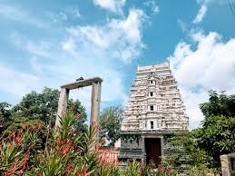
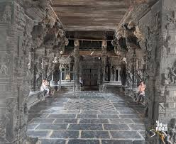
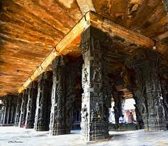
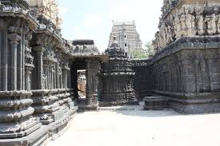
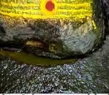
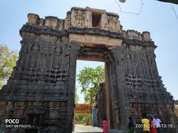
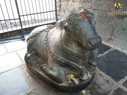
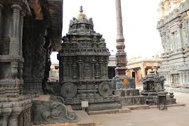

Chintalarayaswamy Temple or Sri Chintala Venkataramana Temple is a Hindu Vaishnavite temple situated at Tadipatri, a town in the Anantapur District of Andhra Pradesh, India.
The Temple is dedicated to Lord Venkateswara, a form of Vishnu, who is referred to as Chintala Venkataramana.
The temple was built by Pemmasani Timmanayudu II of the Pemmasani Nayaks.
It is situated on the bank of the Penna River, which passes through the town.
The temple is known for its granite sculptures and is classified as one of the Monuments of National Importance by Archaeological Survey of India (ASI).
The temple has a Garuda Mandapa built as chariot with rotating granite wheels, which is similar to the one found in the Vithala Temple of Hampi.




CHINTALA VENKATARAMANA SWAMY TEMPLE
BUGGA RAMALINGESHWARA SWAMY TEMPLE
Bugga Ramalingeswara Swamy temple is a Siva shrine situated in Tadipatri, Anantapur district of Andhra Pradesh, India. The temple lies on the bank of the Penna River.
Bugga Ramalingeswara Swamy temple was estimated to have been constructed between 1490 and 1509.




BUGGA RAMALINGESHWARA TEMPLE